CASE STUDY 2025 | UI/UX DESIGN | LUXURY ARCHITECTURE WEBSITE
Designing a digital experience that balances spatial elegance with structured storytelling.
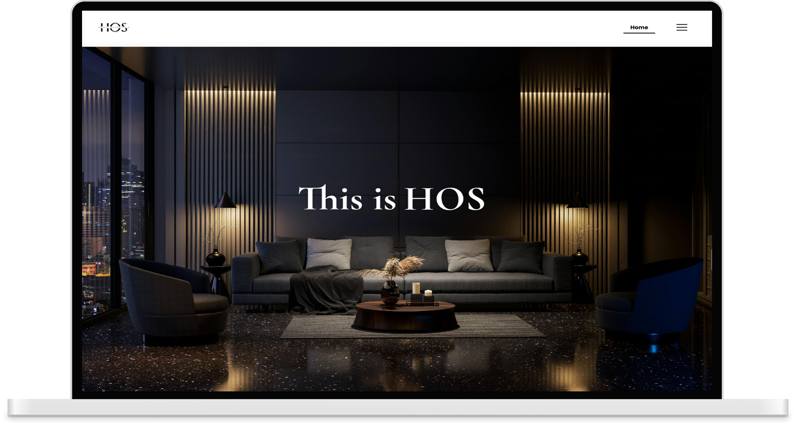
House of Shaarag required a digital presence to showcase its premium architecture and interior design work through a refined, minimal experience. The objective was to translate their design philosophy into a website where restraint, detail, and a single striking visual element define the overall aesthetic.
The platform integrates portfolio presentation with blogs and career opportunities, while maintaining a cohesive, luxury-driven experience supported by subtle, intentional interactions.
House of Shaarag is a design-led studio founded by a duo of architects, bringing a balanced and collaborative approach to architecture and interior design. With a focus on luxury and premium aesthetics, the brand emphasizes refinement, materiality, and attention to detail, shaped by a shared vision of harmony and precision.
Industry
Luxury architecture and interior studio.
Vibe
Premium, Detail-Oriented, Contemporary Luxury.
House of Shaarag lacked a digital presence, limiting its ability to showcase its premium architecture and interior design work. The challenge was to design a refined, minimal website that communicates its philosophy through clarity and intentional detail, evolving from an initial dark theme to a lighter approach better suited to its visual aesthetic.
Maintaining a minimal, refined interface without compromising visual richness or depth.
Using imagery as the primary storytelling medium while preserving structure and navigational clarity.
Balancing expressive, free-flowing layouts with consistency and usability.
Adding intentional details through custom sketch elements, subtle interactions, and purpose-driven sections.
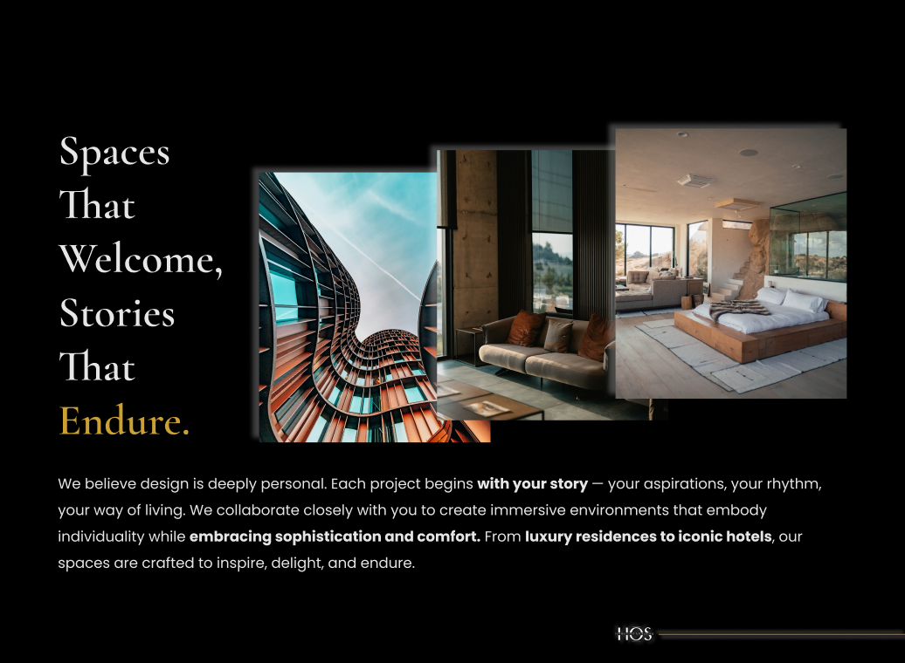
Create a strong digital foundation that positions House of Shaarag as a premium architecture and design studio.
Communicate a clear sense of luxury and refinement aligned with the brand’s design philosophy.
Present projects in a way that highlights craftsmanship, detail, and design intent.
Support content through blogs and careers to build deeper connection beyond project viewing.
Translate the studio’s ethos into a cohesive digital experience that feels intentional and distinctive.
Page Name
Key Sections
Core Functionality
Home
Hero Header, Philosophy, Services Overview,
Process, Why HOS, Project Showcase, CTA.
Introduces the brand, showcases work, drives navigation and conversion.
About Us
Header Section, Who We Are, Philosophy,
Leadership, Team, CTA.
Establishes identity, communicates values and approach, and humanizes the brand.
Services
Hero Header, Design Expertise, Architecture,
Interior Design, Process, CTA.
Outlines offerings, highlights expertise, and clarifies the design process.
Projects
Header Section, Project Listings (bento), CTA.
Showcase real work, build credibility.
Careers
Hero Section, Studio Culture,
Open Positions, CTA.
Communicates culture, lists opportunities, and enables applicant engagement.
Blog
Articles Feed, Journal, CTA.
Shares insights, supports thought leadership, and drives engagement.
Contact
Header Section, Contact Details,
Map Location, Form.
Enables lead generation and facilitates direct communication.
Typography System
Body Text Style
POPPINS / 18PXMicrotext for labels
POPPINS / 12PXColor System
Primary
#F6F6F6 (BG)
Secondary
#1B1B1B (TEXT)
Accent
#CBA135
Shadow
#A1A1A1 (SUPPORT)
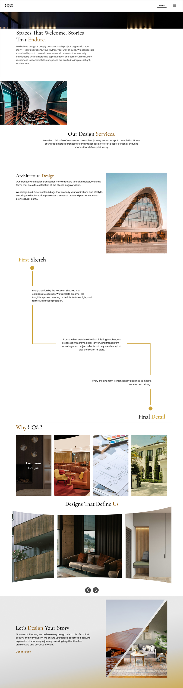
Navigation Considerations
A hamburger menu was chosen to maintain a clean interface, but it reduced visibility of the active page. A subtle page indicator was introduced to restore orientation without disrupting the minimal layout.
Design Considerations
A minimal, curated approach maintains clarity while delivering strong visual impact. Scalable imagery creates an immersive entry, while scroll-reveal interactions introduce a sense of progression aligned with the studio’s workflow. Split compositions add visual interest without overwhelming the interface.
User Experience Rationale
Content is revealed progressively to balance curiosity and clarity. Strong visual entry points capture attention, while structured sections guide users through services, process, and credibility. Scroll-based interactions enhance engagement, and a high-contrast CTA drives action.
Signature Deatil
A subtle accent element is introduced across the interface, inspired by the studio’s design philosophy of incorporating a distinctive feature within every project. Select words and elements are highlighted to create moments of emphasis, adding character while maintaining overall restraint.
Design Considerations
A narrative-driven layout balances storytelling with structure, using scroll-based progression to guide content naturally. Animated transitions introduce key moments, particularly in expressing the founders’ identity, while tab-based layouts provide clarity without visual clutter. A restrained grid system ensures consistency, maintaining a refined and cohesive interface.
Experience Rationale
The design builds connection through structured storytelling, introducing the brand, its philosophy, and its people in a clear flow. Progressive reveals guide users, while tab interactions encourage exploration and deeper understanding.
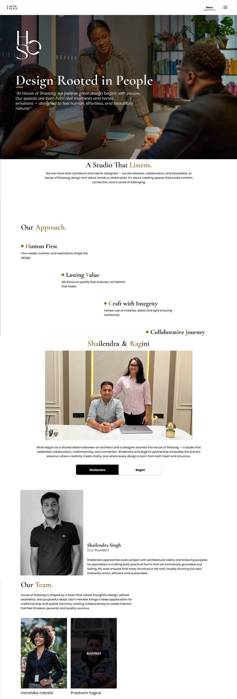
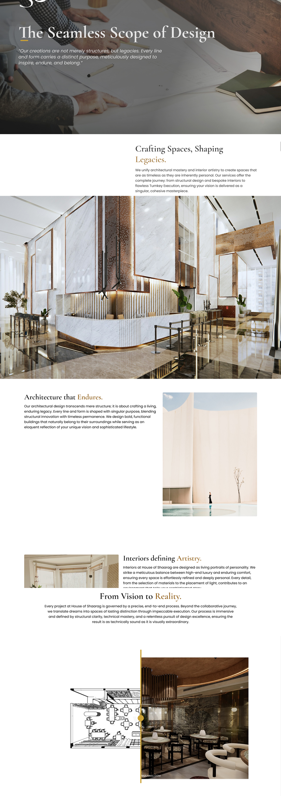
Design Considerations
A structured two-column layout maintains clarity and balance, while horizontal sliders support deeper visual exploration. To address the client’s request to include sketches, a draggable comparison was introduced, allowing users to move between initial sketches and final outcomes.
Experience Insight
The page guides users from understanding services to experiencing the process. The draggable comparison enables active exploration, making the transition from sketch to final output clear and intuitive
Design Considerations
A visual-first approach keeps projects central, with minimal content supporting clarity. A bento-style layout introduces variation within structure, while monochrome imagery with hover-based color transitions adds subtle interactivity aligned with the client’s direction.
Experience Flow
The page supports quick scanning and exploration, allowing users to engage with projects effortlessly. A featured carousel draws attention upfront, while the bento layout and hover interactions create rhythm and encourage interaction.
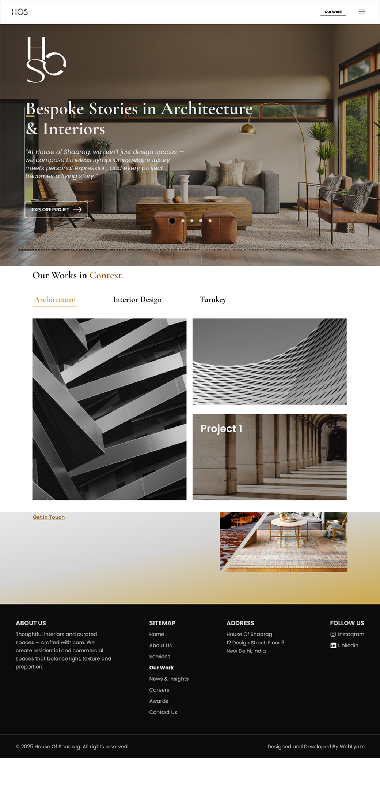
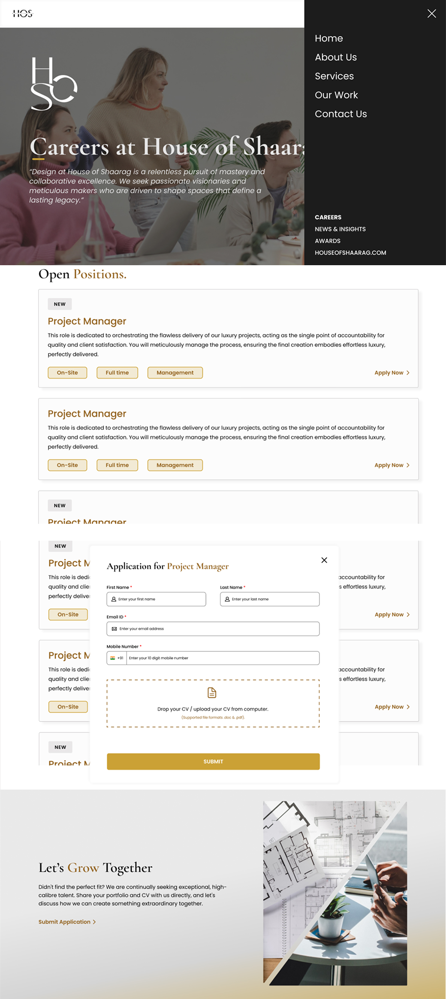
Design Considerations
A clean, structured layout ensures clarity while aligning with the overall visual language. Modular job cards enable easy scanning, while a modal-based application flow reduces friction and keeps users in context.
User Journey
The page guides users from understanding the studio’s culture to taking action. Clear listings support quick evaluation, while inline application flows and open submissions ensure seamless and continuous engagement.
Controlled, purposeful motion to enhance clarity while adding a refined layer of interaction. Movement is subtle, structured, and aligned with the overall design language.
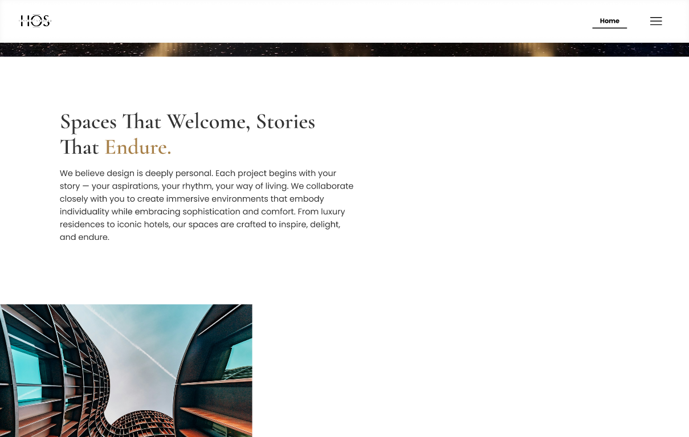
PROGRESSIVE FLOW & IMAGE SCALING
Content reveals in sequence with smooth vertical transitions. Images scale dynamically, shifting from contained to immersive.
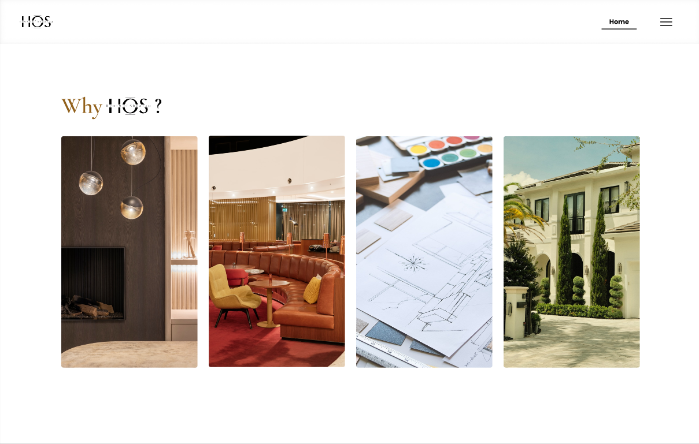
HOVER STATES & IDENTITY TRANSITIONS
Subtle hover responses with scale and color transitions. Identity animation introduces a distinctive brand moment.
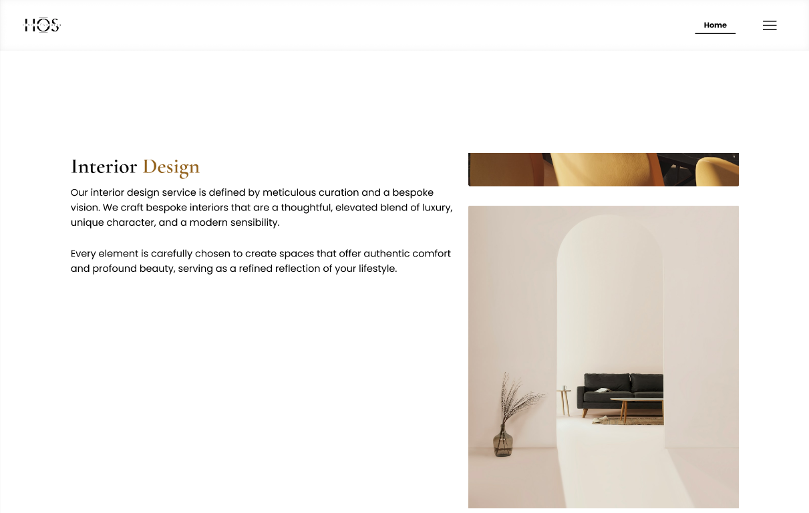
DRAG, SLIDE & EXPLORATION
Draggable and scroll-based components enable active exploration. Transitions visually connect concept to outcome.
The design process involved iterative exploration and refinement, allowing key decisions to evolve in response to content, usability, and visual clarity.
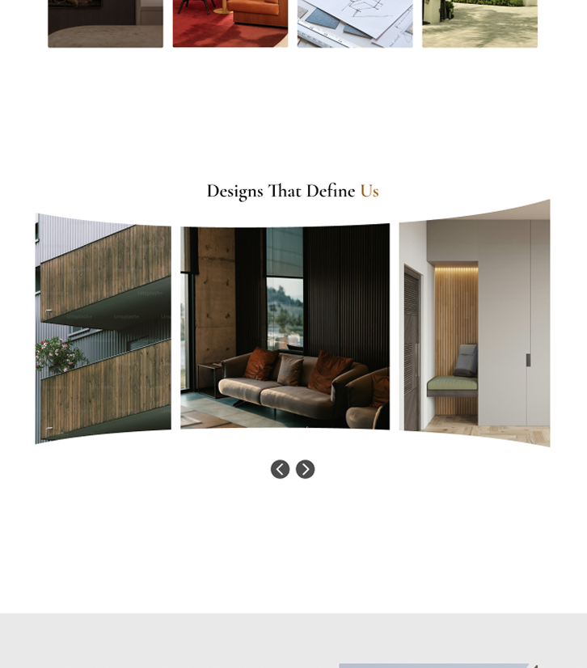
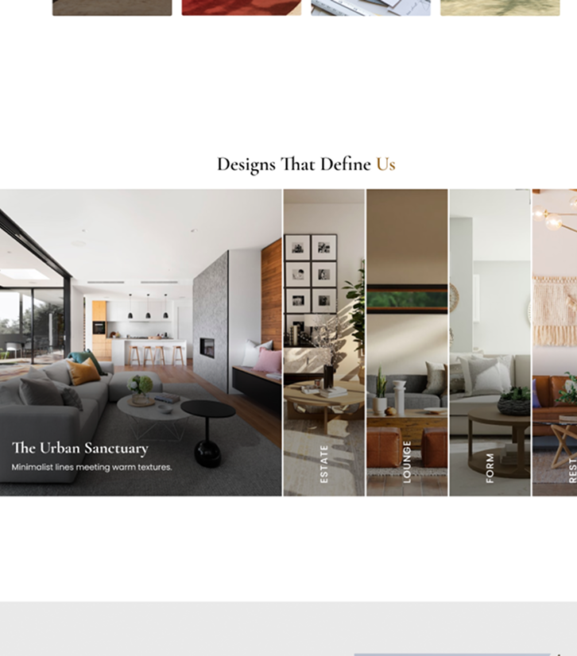
Layout Refinement
The initial direction explored a more expressive, fragmented layout, but proved challenging to implement within development constraints. The design was refined into a structured, grid-based system, improving clarity, consistency, and scalability while maintaining visual depth.
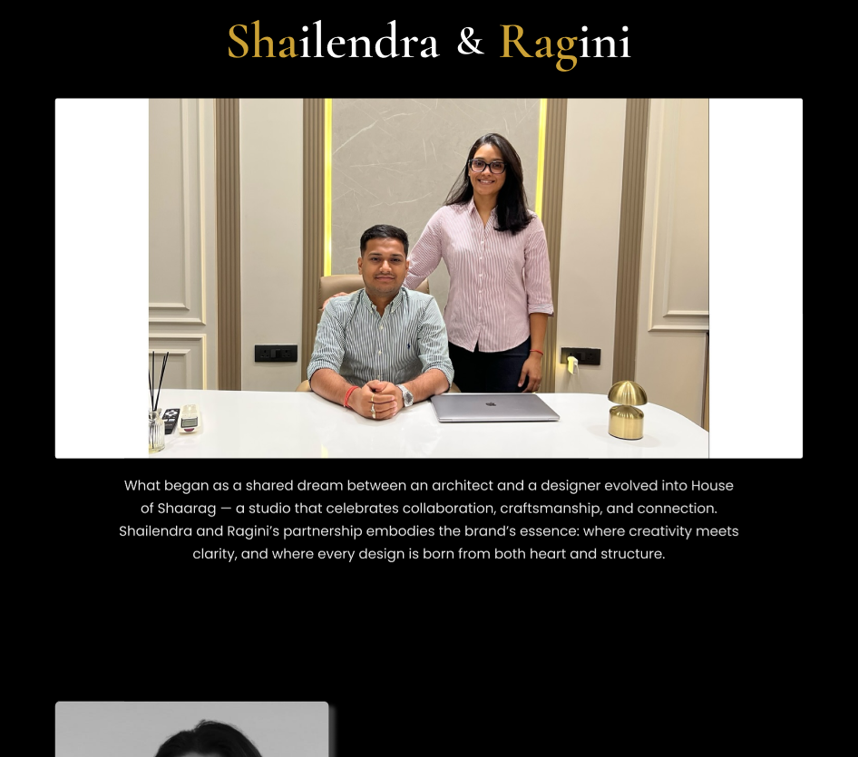
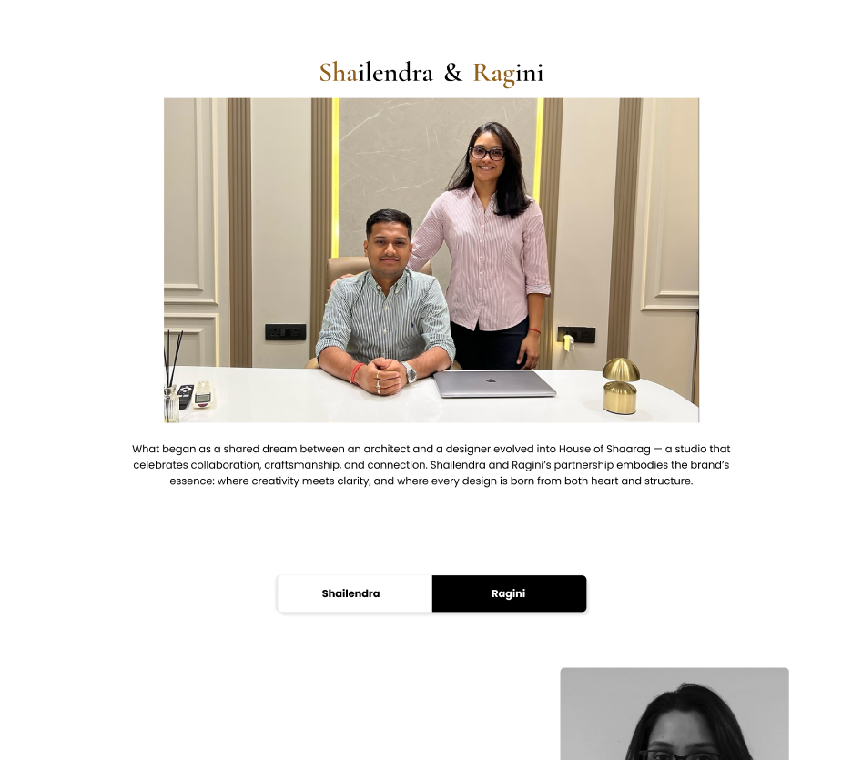
Theme Transition
The initial direction explored a darker interface, but it competed with project imagery and reduced clarity. The design shifted towards a lighter, more restrained approach, allowing content to take precedence while reinforcing the studio’s aesthetic.
Established a cohesive digital identity aligned with the studio’s luxury and design philosophy.
Interactions enhanced immersion, encouraging deeper content exploration.
An image-led approach allowed projects to communicate with minimal text.
Client inputs were translated into meaningful interactions, reinforcing usability and brand authenticity.
Refinements, including a shift to a lighter interface, improved clarity and visual alignment.
“The digital experience reflects the way we design — structured, thoughtful, and intentional. It translates our process clearly, from concept to execution, without losing the essence of our work.”
Shailendra Singh
co-Founder
“What stands out is the attention to detail. The subtle highlights, interactions, and flow bring our design philosophy into the digital space. It feels crafted, not just designed.”
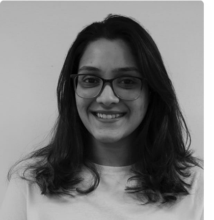
Ragini Chari
Co-Founder